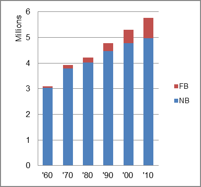

The foreign-born (FB) population decreased from 64,178 in 1960 to 803,695 in 2010. That was an increase of 1152.3 percent. The foreign-born share changed from 2.1 percent to 13.9 percent.
The share of the overall population that was native-born (NB) increased by 63.7 percent.
Maryland: Population 1960-2010 
The first chart below shows the three population change factors for three periods adjusted for annual average amounts. Net domestic migration (NDM) was consistantly negative, and B-D was the principal factor adding population, although NIM accounted for 46 percent of overall populatiion increase in the most recent period.
The second chart shows the same data but with an adjustment to reflect births to immigrants shifted to NIM. In it, NIM was the principal factor in population increase in the last two periods.
Maryland: Sources of Population Change 1990-2013 Maryland: Sources of Population Change (Adjusted) 1990-2013
B-D NDM NIM B-D NDM NIM 90-'99 70.3% neg. 29.7% 90-'99 51.3% neg. 48.7% 00-'09 60.5% neg. 39.5% 00-'09 35.1% neg. 64.9% 10-'13 54.0% neg. 46.0% 10-'13 24.9% neg. 75.1%